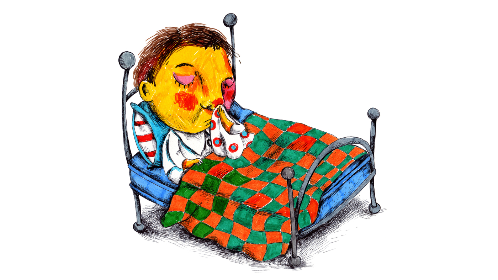
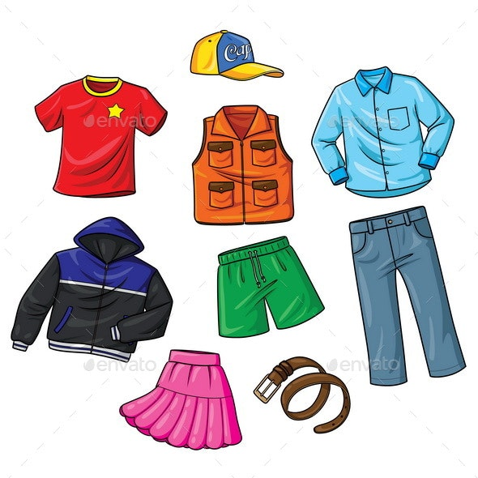
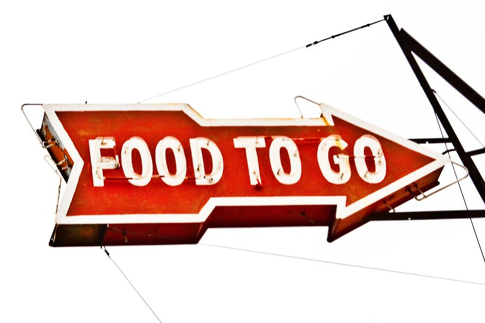

what to do if you are sick
it might be COVID-19 or just an normal cold!the following are my suggestion to protect yourself
- Use CDC's self Tracker to see if you indeed have warning signs and what you need to do next.
- stay at home
- stay away from others
- call your doctor for medical advice
- get a test for COVID-19, if possible

Dishfecting after going out
- prepare two sets of outing only closthing for this season which should be changed,washed, and disinfected frequently, do not mix your other clothes with these two outfits
- prepare two pairs of outing only shoes for the season which should be changed,washed and disnfected frequently, shoes should be left outside of the entrance of the house
- prepare several pairs of gloves for outing only. use a pair of clean gloves each time you go out and keep them on throughout the entire trip. use a clean pair for next tim. dirty gloves should be washed and dis fected frequently

most importantly, if you can bug a surgical masks or N95 masks, wear one when you go out. do not take it off udring the while process
when you eat out, what should you look for and take care of
- food itself is very unlikely to transmit the coronavirus, but restaurants are public ares, which increases the chances of getting infected. if you have to eat out, please pay attention to the following
- choose a restaurant with sanitary conditions
- try your best to avoid buffets or cafeterias. especially, avoid getting food that has been exposed to air or uncovered for a long time.
- dont go to resturant at peak hours. avoid crowded restaurants
- try your best to get yout meal to-go. disinfect the bag and food container. before eating, heat up food again
